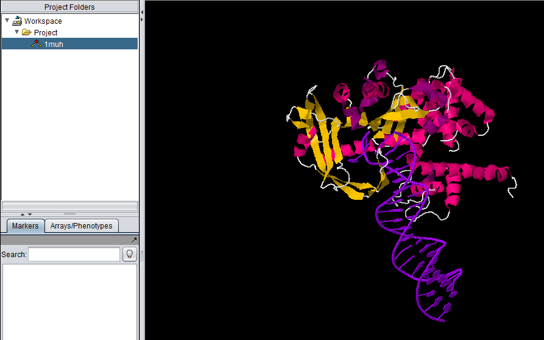
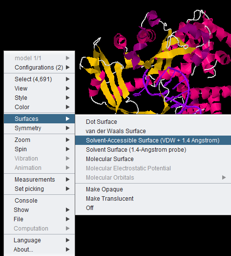

Jmol
Overview
Jmol is a molecular structure viewer. It is from an open-source project which can be found at jmol.sourceforge.net. It is used in geWorkbench to view PDB format files. In the figure below, it has been used to open the file for transposase complexed with DNA (1muh.pdb), available from the Protein Data bank at PDB:1muh

The file 1muh.pdb displayed in Jmol.
Loading a PDB file for viewing in JMOL
- Load the JMOL component in the Component Configuration Manager, if not already done.
- Create a new project or select an existing project in the Project Folders component.
A PDB file can be loaded from disk, or directly from the RCSB Protein Data Bank
To load from a local file
- Right-click on the project.
- Select "Open File(s)"
- Select the file type as "PDB File Format".
- Locate the desired PDB-format file using the file browser (the browser will display files with a ".pdb" filename suffix).
- The molecular structure will be displayed in Jmol.
Open PDB File from RCSB Protein Data Bank
- Right-click on the project.
- Select "Open PDB File from RCSB Protein Data Bank.
- Enter the code for the desired structure, e.g. "1muh".
- The structure file will be retrieved and displayed in JMOL.
Jmol Display Options
All JMOL visualization options are available by right-clicking in the component. Here we show the menu-item for the solvent accessible surface being chosen.

Increasing memory for very large structures
It may occur for very large PDB structures that geWorkbench does not have enough memory available. This can be remedied by increasing the amount of memory allocated to Java and restarting geWorkbench. Instructions for increasing the amount of Java memory are available in the geWorkbench FAQ.